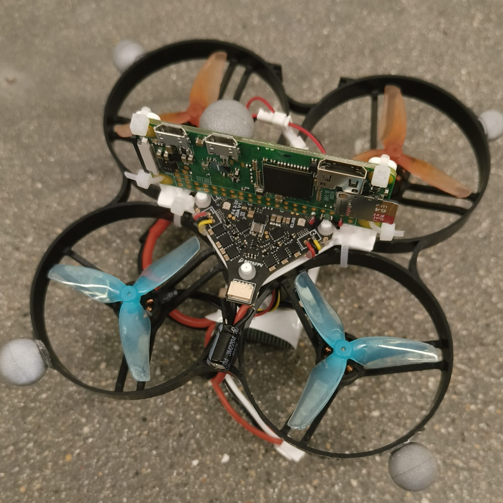
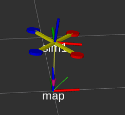

Brief Overview
The objective is to achieve precise and efficient quadrotor movement from point A to B in the minimum possible time. The project involves developing a mathematical simulation for a given hardware design, replicating its controls, creating a ROS-based control loop with a PID controller, and implementing a minimum snap trajectory generator and trajectory controller.
Video demo
TODO
Hardware setup
The quadrotor hardware includes a Betaflight flight controller, a Raspberry Pi 0 for processing, and 1103 brushless motors with KV ratings of 8000 to 15000 RPM/V. The controller takes inputs such as roll, pitch, yaw (1050-1900 range), and throttle (1000-1900 range).
The drone's position is independently tracked using OptiTrack, providing precise positional data for validation and control loop optimization.

Software setup
The simulation is developed in Python and ROS2 visualizing in Rviz. The simulation includes a quadrotor model with a minimum snap trajectory generator and a trajectory controller.
The control loop is implemented in ROS using Python and rospy. The control loop includes a PID controller or Trajectory controller for roll, pitch, yaw, and throttle.
Simulation
The control inputs provided to the quadrotor are as follows:
- Roll, Pitch, and Yaw: Input values range from 1050 to 1900. A value of 1500 corresponds to the neutral position. Roll and pitch inputs are scaled to absolute angles based on the maximum tilt angle set in the Betaflight flight controller.
- Throttle: Input values range from 1000 to 1900, where 1000 represents 0% thrust and 1900 corresponds to 100% thrust.
Control and Simulation Process:
- PWM to Angle Conversion: Roll and pitch targets are calculated using the formula:
\[
\text{Target Angle} = \left( \frac{\text{Input} - 1050}{900} \times 110 \right) - 55
\]
- Thrust Calculation: The thrust is calculated as:
\[
\text{Thrust} = \frac{\text{Input} - 1000}{1000} \times \text{Max Thrust}
\]
- PID Control: PID controllers are implemented for roll and pitch stabilization. The error is the difference between the target angle and the current angle:
\[
\text{Error}_{\text{roll}} = \text{Target Roll (rad)} - \text{Current Roll (rad)}
\]
\[
\text{Error}_{\text{pitch}} = \text{Target Pitch (rad)} - \text{Current Pitch (rad)}
\]
The control effort is updated using the PID formula:
\[
\text{Control Effort} = K_p \times \text{Error} + K_i \times \int \text{Error} \, dt + K_d \times \frac{d(\text{Error})}{dt}
\]
- Thrust Transformation: The thrust in the body frame is converted to the world frame using the rotation matrix:
\[
\mathbf{Thrust}_{\text{GF}} = \mathbf{R}_{\text{BF→GF}} \times \begin{bmatrix} 0 \\ 0 \\ \text{Thrust} \end{bmatrix}
\]
Where \(\mathbf{R}_{\text{BF→GF}}\) is the rotation matrix derived from the roll, pitch, and yaw angles.
- Position Updates: The acceleration in each axis is computed, and velocities and positions are updated:
\[
\ddot{z} = \frac{\text{Thrust}_{z, \text{GF}}}{m} - g
\]
\[
\ddot{x} = -\frac{\text{Thrust}_{x, \text{GF}}}{m}, \quad \ddot{y} = -\frac{\text{Thrust}_{y, \text{GF}}}{m}
\]
\[
\dot{x} = \dot{x} + \ddot{x} \cdot dt, \quad x = x + \dot{x} \cdot dt
\]
Similar equations apply for \(y\) and \(z\).
Key Considerations:
- Ground Constraint: If \(z < 0\), the quadrotor is grounded, and all velocities are set to zero.
- Random Perturbations: Small random variations are introduced to \(p\) and \(q\) to simulate real-world disturbances.
Drone Marker Visualization
The simulation includes a visualization of the drone as a marker in Rviz. While the marker does not accurately represent the physical dimensions of the drone, it serves as a visual aid to demonstrate its position and orientation during the simulation. Below is a snapshot of the visualization:

Controller On Board
Raspberry Pi Zero Communication
The Raspberry Pi Zero serves as the intermediary between the control commands and the Betaflight flight controller on the quadrotor. It communicates with the base station computer through a UDP connection, running at a frequency of 100 Hz. The control messages it sends include throttle, roll, pitch, yaw, arm/disarm status, and flight mode.
Control Commands Sent to the Raspberry Pi
- Throttle: The throttle value to control the motor speed.
- Roll: The roll command to control the drone's roll angle.
- Pitch: The pitch command to control the drone's pitch angle.
- Yaw: The yaw command to control the drone's yaw angle.
- Aux1 (Arm/Disarm): Controls the arm/disarm state of the drone.
- Aux2 (Mode): Controls the flight mode of the drone. There are two modes:
- Angle Mode: Stabilized flight mode, where the drone tries to maintain a fixed angle.
- Horizon Mode: A hybrid mode between manual and stabilized, with limited angle control.
Communication with Betaflight Controller
The Raspberry Pi uses the yamspy library to communicate with the Betaflight controller board. The communication is based on the MSP (Multiwii Serial Protocol) to send control commands to the flight controller.
Control Node
The drone control node subscribes to the /quad_ctrl topic and receives the control commands. It then sends the commands to the Raspberry Pi through UDP, ensuring smooth control of the drone.
Communication with Optitrack
What Happens on the Optitrack Station:
On the Optitrack station, a rigid body is created within the Motive app. This rigid body represents the drone or its tracking system. A script is then executed to track the current position of the rigid body in real-time. The script sends the position data through a UDP connection to the base station. The data sent includes:
- x, y, z: Position coordinates of the rigid body.
- x, y, z, w: Quaternion values representing the orientation of the rigid body.
The UDP connection continuously transmits the position and orientation data from Optitrack to the base station for further processing.
What Happens on the BaseStation:
On the BaseStation, the system listens for the incoming UDP messages containing the position and orientation data. Upon receiving the data, it performs the following steps:
- The system extracts the x, y, z position and x, y, z, w quaternion orientation values from the UDP message.
- The system then converts these values into a ROS
PoseStamped message format, which is compatible with ROS2 for further processing.
- The pose is also transformed to set a desired origin or reference frame, ensuring that the position data aligns with the control and simulation systems.
- Additionally, a transformation is published, allowing other nodes in the ROS ecosystem to subscribe to and use the pose and orientation data for further control or monitoring purposes.
This process allows the base station to track and control the position of the drone based on the data received from Optitrack, providing real-time feedback for control loop adjustments.
ROS Control Loop
Nodes
- Controller
- Simulation
- Optitrack
Min-snap Trajectory
Results
PID sim
PID hardware
Min-snap sim
Min-snap hardware